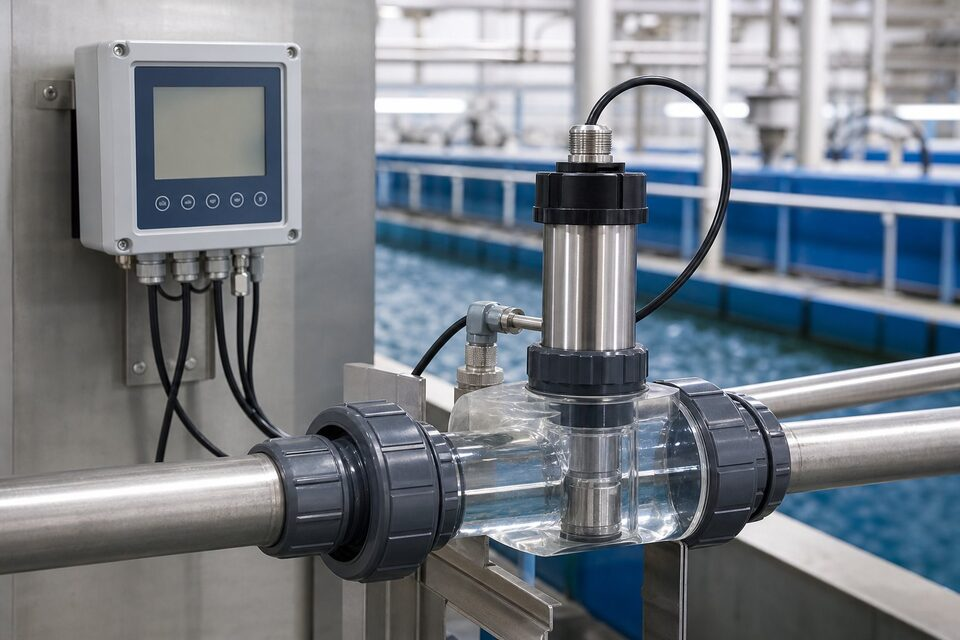

اصل اندازهگیری؛ پراکندگی نور
وقتی نور به آبی که ذرات معلق دارد تابیده میشود، بخشی از آن توسط ذرات پراکنده میشود. کدورتسنج با اندازهگیری شدت این نور پراکنده در زوایای مشخص، غلظت نسبی ذرات معلق را تخمین میزند: آب شفاف، پراکندگی کمی دارد و آب کدر، پراکندگی زیاد. این روش سریع، غیرمخرب و مناسب پایش پیوسته است. نکته مهم این است که کدورت، اندازه ذرات را نشان نمیدهد و فقط شاخصی از مواد معلق است؛ برای شناسایی منبع کدورت، تحلیلهای تکمیلی لازم است اما برای کنترل فرایند تصفیه، همین شاخص کافی و بسیار کارآمد است.

روشها و استانداردها
استانداردهای مختلف، منبع نور، زوایای تشخیص و واحدها را تعریف میکنند و برای انتخاب تجهیز باید بدانید خروجی با کدام مرجع باید همخوان باشد. روشهای پراکندگی در زاویه نود درجه برای رنجهای عمومی رایجاند، در حالی که برای کدورتهای بسیار پایین، روشهای حساستر با آرایشهای نوری خاص استفاده میشود. برای پایش آب آشامیدنی، انطباق با روش مرجع الزامی است؛ چون حدود قانونی بر اساس همان روش تعریف شدهاند و استفاده از روش متفاوت، مقایسهپذیری را از بین میبرد.
کاربردهای اصلی
- تصفیهخانههای آب آشامیدنی: پایش خروجی فیلترها و آب نهایی.
- تصفیه فاضلاب: پایش پساب خروجی و رعایت حدود مجاز.
- صنایع غذایی و نوشیدنی: کنترل شفافیت محصول.
- نیروگاهها: پایش آبهای فرایندی.
- پایش خطوط انتقال و شبکه توزیع.
نگهداری و کالیبراسیون
پاشنه آشیل اندازهگیری کدورت، آلودگی سطوح نوری است: رسوب، جلبک یا خراش روی پنجرهها، خوانش را به شکل غیرقابل پیشبینی تغییر میدهد. در نقاط با آب رسوبزا، سیستمهای تمیزکاری خودکار یا برنامه تمیزکاری دورهای کوتاه ضروری است. کالیبراسیون نیز با استانداردهای مرجع انجام میگیرد و دوره آن به حساسیت نقطه بستگی دارد؛ در نقاط با حدود قانونی سختگیرانه، ثبت کالیبراسیون و ممیزی دورهای توصیه میشود. در نصب، محل نمونهگیری باید معرف جریان اصلی باشد و از نقاط رکود و حباب هوا پرهیز گردد.
در انتخاب سنسور نیز باید رنج مورد انتظار را در نظر گرفت: برای آب آشامیدنی با کدورت بسیار پایین، سنسورهای حساس با آرایش نوری خاص لازم است، در حالی که برای پساب با کدورت بالا، سنسورهای عمومی با محدوده وسیع کافیاند.
جمعبندی
کدورتسنج، چشم پایش کیفیت آب است: سریع، پیوسته و قابل اتکا، به شرط نگهداری درست سطوح نوری و کالیبراسیون با مرجع مناسب. با انتخاب روش منطبق با حدود قانونی و برنامه تمیزکاری واقعبینانه، این اندازهگیری به یکی از پایدارترین حلقههای پایش در تصفیهخانه تبدیل میشود.
سوالات رایج
کدورتسنج چگونه کار میکند؟
با تابش نور به نمونه و اندازهگیری شدت نور پراکندهشده توسط ذرات معلق؛ هرچه ذرات بیشتر باشد، پراکندگی و خوانش کدورت بالاتر است. زوایای تشخیص مختلف برای رنجها و استانداردهای متفاوت استفاده میشوند.
واحد رایج اندازهگیری چیست؟
واحد نفلومتری رایجترین واحد است و استانداردهای مختلف زوایای تشخیص و منابع نوری مشخصی را تعریف میکنند؛ در گزارشها باید واحد و روش مرجع ذکر شود.
چرا در آب آشامیدنی اهمیت دارد؟
کدورت بالا هم نشانه آلودگی ذرهای است و هم میتواند اثربخشی گندزدایی را کاهش دهد؛ به همین دلیل حدود سختگیرانهای برای آن تعریف شده و پایش پیوسته آن الزامی است.
مهمترین نکته نگهداری چیست؟
تمیزی سطوح نوری؛ هر گونه رسوب یا خراش روی پنجرههای اپتیکی، خوانش را خطا میاندازد. تمیزکاری خودکار یا دورهای و کالیبراسیون با استاندارد، پایداری را حفظ میکند.
مطالب مرتبط
با ذکر رنج کدورت، نوع آب و شرایط نصب، سنسور و آنالایزر کدورت از برندهای معتبر عرضه میشود.
مشاهده صفحه محصول ← ثبت RFQ همین محصولتامین این تجهیزات را به پیشرو تجهیز فرتاک بسپارید
شرکت پیشرو تجهیز فرتاک تامینکننده تخصصی تجهیزات صنعتی برای پروژههای نفت، گاز، پتروشیمی، فولاد و نیروگاهی است. برای دریافت پیشنهاد فنی و قیمت، استعلام (RFQ) خود را ثبت کنید تا کارشناسان مهندسی فروش در کوتاهترین زمان پاسخ دهند.
- تامین ابزار دقیقترانسمیترها و آنالایزرهای برندهای معتبر
- تامین تجهیزات صنایع نفت و گازپکیج مواد مطابق وندورلیست